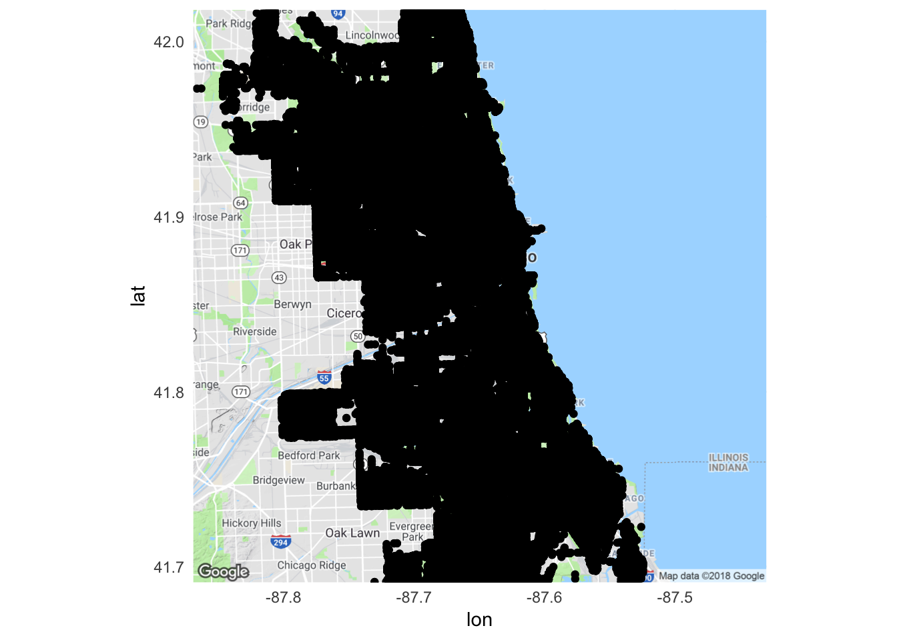
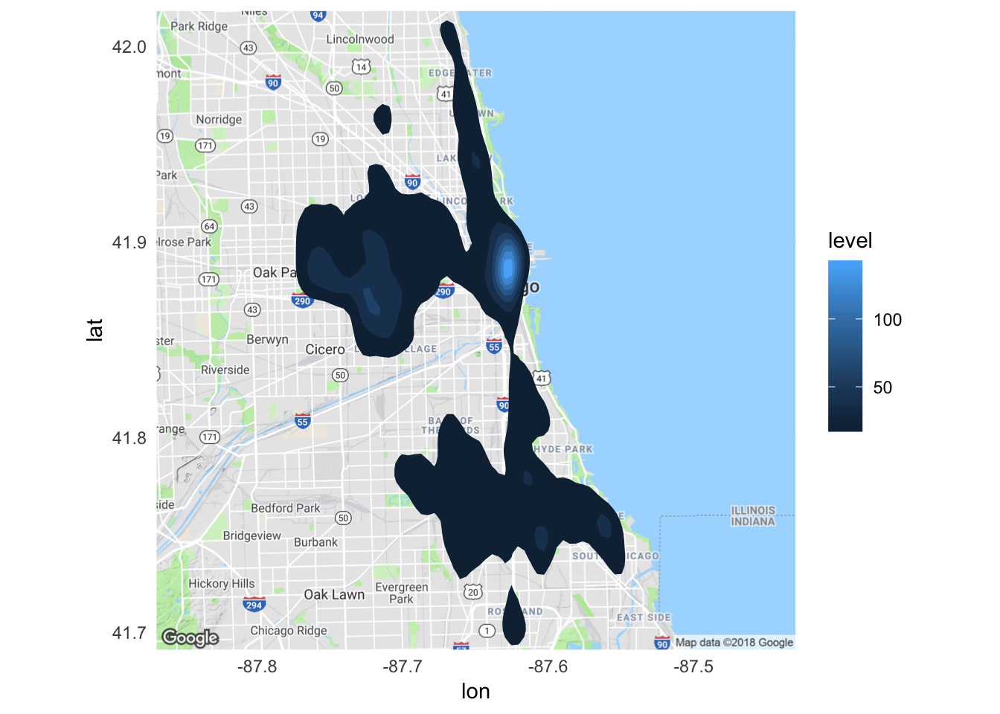
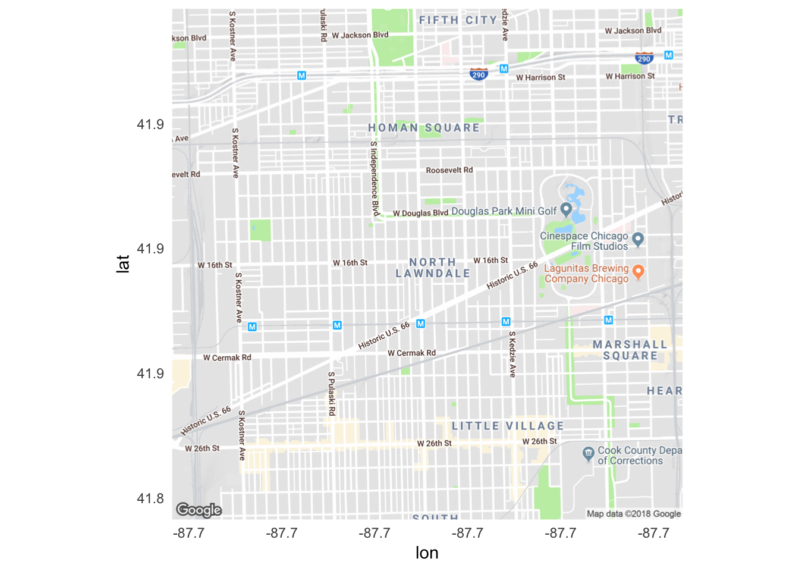
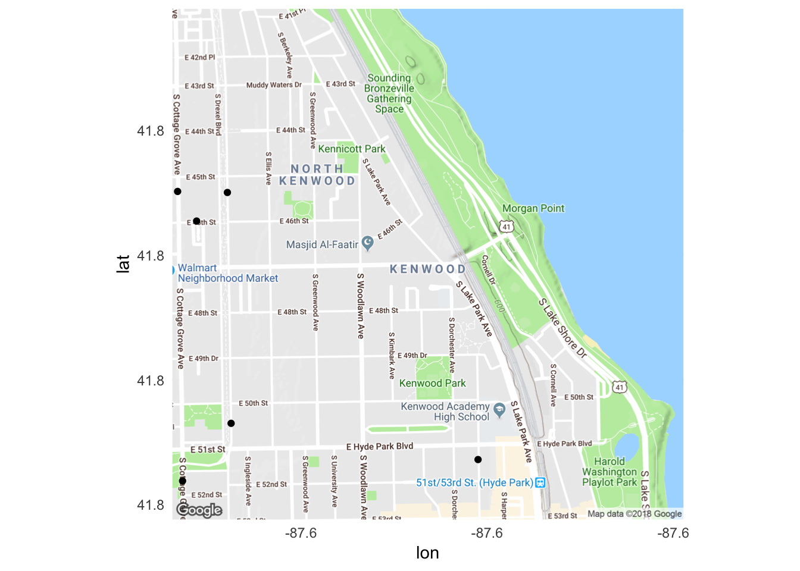

Drawing raster maps with ggmap
library(tidyverse)
library(ggmap)
library(RColorBrewer)
library(gridExtra)
library(here)
options(digits = 3)
set.seed(1234)
theme_set(theme_minimal())ggmap
ggmap is a package for R that retrieves raster map tiles from online mapping services like Google Maps and plots them using the ggplot2 framework. The map tiles are raster because they are static image files generated previously by the mapping service. You do not need any data files containing information on things like scale, projection, boundaries, etc. because that information is already created by the map tile. This severely limits your ability to redraw or change the appearance of the geographic map, however the tradeoff means you can immediately focus on incorporating additional data into the map.
Google has recently changed its API requirements, and ggmap users are now required to provide an API key and enable billing. We will learn far more about APIs next week. In the meantime, I would not recommend trying to use Google Maps to obtain map images. The code below would work for you, but Google now charges you each time you obtain a map image. Stick to the other providers such as Stamen Maps.
Obtain map images
ggmap supports open-source map providers such as OpenStreetMap and Stamen Maps, as well as the proprietary Google Maps. Obtaining map tiles requires use of the get_map() function. There are two formats for specifying the mapping region you wish to obtain:
- Bounding box
- Center/zoom
Specifying map regions
Bounding box
Bounding box requires the user to specify the four corners of the box defining the map region. For instance, to obtain a map of Chicago using Stamen Maps:
# store bounding box coordinates
chi_bb <- c(left = -87.936287,
bottom = 41.679835,
right = -87.447052,
top = 42.000835)
chicago_stamen <- get_stamenmap(bbox = chi_bb,
zoom = 11)
chicago_stamen## 627x712 terrain map image from Stamen Maps. see ?ggmap to plot it.To view the map, use ggmap():
ggmap(chicago_stamen)
The zoom argument in get_stamenmap() controls the level of detail in the map. The larger the number, the greater the detail.
get_stamenmap(bbox = chi_bb,
zoom = 12) %>%
ggmap()
The smaller the number, the lesser the detail.
get_stamenmap(bbox = chi_bb,
zoom = 10) %>%
ggmap()
Trial and error will help you decide on the appropriate level of detail depending on what data you need to visualize on the map.
Use bboxfinder.com to determine the exact longitude/latitude coordinates for the bounding box you wish to obtain.
Center/zoom
While Stamen Maps and OpenStreetMap require the bounding box format for obtaining map tiles and allow you to increase or decrease the level of detail within a single bounding box, Google Maps requires specifying the center coordinate of the map (a single longitude/latitude location) and the level of zoom or detail. zoom is an integer value from 3 (continent) to 21 (building). This means the level of detail is hardcoded to the size of the mapping region. The default zoom level is 10.
# store center coordinate
chi_center <- c(lon = -87.65, lat = 41.855)
chicago_google <- get_googlemap(center = chi_center)
ggmap(chicago_google)
get_googlemap(center = chi_center,
zoom = 12) %>%
ggmap()
get_googlemap(center = chi_center,
zoom = 8) %>%
ggmap()
Use Find Latitude and Longitude to get the exact GPS coordinates of the center location.
Types of map tiles
Each map tile provider offers a range of different types of maps depending on the background you want for the map. Stamen Maps offers several different types:

Google Maps is a bit more limited, but still offers a few major types:

See the documentation for the get_*map() function for the exact code necessary to get each type of map.
get_map()is a wrapper that automatically queries Google Maps, OpenStreetMap, or Stamen Maps depending on the function arguments and inputs. While useful, it also combines all the different arguments ofget_googlemap(),get_stamenmap(), andgetopenstreetmap()and can become a bit jumbled. Use at your own risk.
Import crime data
Now that we can obtain map tiles and draw them using ggmap(), let’s explore how to add data to the map. The city of Chicago has an excellent data portal publishing a large volume of public records. Here we’ll look at crime data from 2017.1 I previously downloaded a .csv file containing all the records, which I import using read_csv():
If you are copying-and-pasting code from this demonstration, change this line of code to
crimes <- read_csv("https://cfss.uchicago.edu/data/Crimes_-_2017.csv")to download the file from the course website.
crimes <- here::here("data", "Crimes_-_2017.csv") %>%
read_csv()
glimpse(crimes)## Observations: 267,345
## Variables: 22
## $ ID <dbl> 11094370, 11118031, 11134189, 11156462, 1…
## $ `Case Number` <chr> "JA440032", "JA470589", "JA491697", "JA52…
## $ Date <chr> "09/21/2017 12:15:00 AM", "10/12/2017 07:…
## $ Block <chr> "072XX N CALIFORNIA AVE", "055XX W GRAND …
## $ IUCR <chr> "1122", "1345", "4651", "1110", "0265", "…
## $ `Primary Type` <chr> "DECEPTIVE PRACTICE", "CRIMINAL DAMAGE", …
## $ Description <chr> "COUNTERFEIT CHECK", "TO CITY OF CHICAGO …
## $ `Location Description` <chr> "CURRENCY EXCHANGE", "JAIL / LOCK-UP FACI…
## $ Arrest <lgl> TRUE, TRUE, TRUE, TRUE, TRUE, TRUE, TRUE,…
## $ Domestic <lgl> FALSE, FALSE, FALSE, FALSE, FALSE, FALSE,…
## $ Beat <chr> "2411", "2515", "0922", "2514", "1221", "…
## $ District <chr> "024", "025", "009", "025", "012", "002",…
## $ Ward <dbl> 50, 29, 12, 30, 32, 20, 9, 12, 12, 27, 32…
## $ `Community Area` <dbl> 2, 19, 58, 19, 24, 40, 49, 30, 30, 23, 24…
## $ `FBI Code` <chr> "10", "14", "26", "11", "02", "15", "03",…
## $ `X Coordinate` <dbl> 1156443, 1138788, 1159425, 1138653, 11612…
## $ `Y Coordinate` <dbl> 1947707, 1913480, 1875711, 1920720, 19052…
## $ Year <dbl> 2017, 2017, 2017, 2017, 2017, 2017, 2017,…
## $ `Updated On` <chr> "03/01/2018 03:52:35 PM", "03/01/2018 03:…
## $ Latitude <dbl> 42.0, 41.9, 41.8, 41.9, 41.9, 41.8, 41.7,…
## $ Longitude <dbl> -87.7, -87.8, -87.7, -87.8, -87.7, -87.6,…
## $ Location <chr> "(42.012293397, -87.699714109)", "(41.918…Each row of the data frame is a single reported incident of crime. Geographic location is encoded in several ways, though most importantly for us the exact longitude and latitude of the incident is encoded in the Longitude and Latitude columns respectively.
Plot high-level map of crime
Let’s start with a simple high-level overview of reported crime in Chicago. First we need a map for the entire city.
chicago <- get_googlemap(center = c(lon = -87.65, lat = 41.855),
zoom = 11)
ggmap(chicago)
Using geom_point()
Since each row is a single reported incident of crime, we could use geom_point() to map the location of every crime in the dataset. Because ggmap() uses the map tiles (here, defined by chicago) as the basic input, we specify data and mapping inside of geom_point(), rather than inside ggplot():
ggmap(chicago) +
geom_point(data = crimes,
mapping = aes(x = Longitude,
y = Latitude))
What went wrong? All we get is a sea of black.
nrow(crimes)## [1] 267345Oh yeah. There were 267345 reported incidents of crime in the city. Each incident is represented by a dot on the map. How can we make this map more usable? One option is to decrease the size and increase the transparancy of each data point so dense clusters of crime become apparent:
ggmap(chicago) +
geom_point(data = crimes,
aes(x = Longitude,
y = Latitude),
size = .25,
alpha = .01)
Better, but still not quite as useful as it could be.
Using stat_density_2d()
Instead of relying on geom_point() and plotting the raw data, a better approach is to create a heatmap. More precisely, this will be a two-dimensional kernel density estimation (KDE). In this context, KDE will take all the raw data (i.e. reported incidents of crime) and convert it into a smoothed plot showing geographic concentrations of crime. The core function in ggplot2 to generate this kind of plot is geom_density_2d():
ggmap(chicago) +
geom_density_2d(data = crimes,
aes(x = Longitude,
y = Latitude))
By default, geom_density_2d() draws a contour plot with lines of constant value. That is, each line represents approximately the same frequency of crime all along that specific line. Contour plots are frequently used in maps (known as topographic maps) to denote elevation.

The Cadillac Mountains. Source: US Geological Survey
Rather than drawing lines, instead we can fill in the graph so that we use the fill aesthetic to draw bands of crime density. To do that, we use the related function stat_density_2d():
ggmap(chicago) +
stat_density_2d(data = crimes,
aes(x = Longitude,
y = Latitude,
fill = stat(level)),
geom = "polygon")
Note the two new arguments:
geom = "polygon"- change the geometric object to be drawn from adensity_2dgeom to apolygongeomfill = stat(level)- the value for thefillaesthetic is thelevelcalculated withinstat_density_2d(), which we access using thestat()notation.
This is an improvement, but we can adjust some additional settings to make the graph visually more useful. Specifically,
- Increase the number of
bins, or unique bands of color allowed on the graph - Make the heatmap semi-transparent using
alphaso we can still view the underlying map - Change the color palette to better distinguish between high and low crime areas. Here I use
brewer.pal()from theRColorBrewerpackage to create a custom color palette using reds and yellows.
ggmap(chicago) +
stat_density_2d(data = crimes,
aes(x = Longitude,
y = Latitude,
fill = stat(level)),
alpha = .2,
bins = 25,
geom = "polygon") +
scale_fill_gradientn(colors = brewer.pal(7, "YlOrRd"))
From this map, a couple trends are noticeable:
- The downtown region has the highest crime incidence rate. Not surprising given its population density during the workday.
- There are clusters of crime on the south and west sides. Also not surprising if you know anything about the city of Chicago.
Looking for variation
Because ggmap is built on ggplot2, we can use the core features of ggplot2 to modify the graph. One major feature is faceting. Let’s focus our analysis on four types of crimes with similar frequency of reported incidents2 and facet by type of crime:
ggmap(chicago) +
stat_density_2d(data = crimes %>%
filter(`Primary Type` %in% c("BURGLARY", "MOTOR VEHICLE THEFT",
"NARCOTICS", "ROBBERY")),
aes(x = Longitude,
y = Latitude,
fill = stat(level)),
alpha = .4,
bins = 10,
geom = "polygon") +
scale_fill_gradientn(colors = brewer.pal(7, "YlOrRd")) +
facet_wrap(~ `Primary Type`)
There is a large difference in the geographic density of narcotics crimes relative to the other catgories. While burglaries, motor vehicle thefts, and robberies are reasonably prevalent all across the city, the vast majority of narcotics crimes occur in the west and south sides of the city.
Locations of murders
While geom_point() was not appropriate for graphing a large number of observations in a dense geographic location, it does work rather well for less dense areas. Now let’s limit our analysis strictly to reported incidents of homicide in 2017.
(homicides <- crimes %>%
filter(`Primary Type` == "HOMICIDE"))## # A tibble: 671 x 22
## ID `Case Number` Date Block IUCR `Primary Type` Description
## <dbl> <chr> <chr> <chr> <chr> <chr> <chr>
## 1 2.31e4 JA149608 02/1… 001X… 0110 HOMICIDE FIRST DEGR…
## 2 2.39e4 JA530946 11/3… 088X… 0110 HOMICIDE FIRST DEGR…
## 3 2.34e4 JA302423 06/1… 047X… 0110 HOMICIDE FIRST DEGR…
## 4 2.34e4 JA312425 06/1… 006X… 0110 HOMICIDE FIRST DEGR…
## 5 2.37e4 JA490016 10/2… 048X… 0110 HOMICIDE FIRST DEGR…
## 6 2.32e4 JA210752 04/0… 013X… 0110 HOMICIDE FIRST DEGR…
## 7 2.36e4 JA461918 10/0… 018X… 0110 HOMICIDE FIRST DEGR…
## 8 2.36e4 JA461918 10/0… 018X… 0110 HOMICIDE FIRST DEGR…
## 9 1.08e7 JA138326 02/0… 013X… 0142 HOMICIDE RECKLESS H…
## 10 2.35e4 JA364517 07/2… 047X… 0110 HOMICIDE FIRST DEGR…
## # … with 661 more rows, and 15 more variables: `Location
## # Description` <chr>, Arrest <lgl>, Domestic <lgl>, Beat <chr>,
## # District <chr>, Ward <dbl>, `Community Area` <dbl>, `FBI Code` <chr>,
## # `X Coordinate` <dbl>, `Y Coordinate` <dbl>, Year <dbl>, `Updated
## # On` <chr>, Latitude <dbl>, Longitude <dbl>, Location <chr>We can draw a map of the city with all homicides indicated on the map using geom_point():
ggmap(chicago) +
geom_point(data = homicides,
mapping = aes(x = Longitude,
y = Latitude),
size = 1)
Compared to our previous overviews, few if any homicides are reported downtown. We can also narrow down the geographic location to map specific neighborhoods in Chicago. First we obtain map tiles for those specific regions. Here we’ll examine North Lawndale and Kenwood.
# North Lawndale is the highest homicides in 2017
# Compare to Kenwood
north_lawndale <- get_map(location = c(lon = -87.714401,
lat = 41.858768),
zoom = 14)
kenwood <- get_map(location = c(lon = -87.59320836086425,
lat = 41.80965352973664),
zoom = 15)
ggmap(north_lawndale)
ggmap(kenwood)
To plot homicides specifically in these neighborhoods, change ggmap(chicago) to the appropriate map tile:
ggmap(north_lawndale) +
geom_point(data = homicides,
aes(x = Longitude, y = Latitude))
ggmap(kenwood) +
geom_point(data = homicides,
aes(x = Longitude, y = Latitude))
North Lawndale had the most reported homicides in 2017, whereas Kenwood had only a handful. And even though homicides contained data for homicides across the entire city, ggmap() automatically cropped the graph to keep just the homicides that occurred within the bounding box.
All the other aesthetic customizations of geom_point() work with ggmap. So we could expand these neighborhood maps to include all violent crime categories3 and distinguish each type by color:
(violent <- crimes %>%
filter(`Primary Type` %in% c("HOMICIDE",
"CRIM SEXUAL ASSAULT",
"ROBBERY")))## # A tibble: 14,146 x 22
## ID `Case Number` Date Block IUCR `Primary Type` Description
## <dbl> <chr> <chr> <chr> <chr> <chr> <chr>
## 1 1.12e7 JA531910 12/0… 022X… 0265 CRIM SEXUAL A… AGGRAVATED…
## 2 1.10e7 JA322389 06/2… 003X… 031A ROBBERY ARMED: HAN…
## 3 1.12e7 JA545986 12/1… 007X… 031A ROBBERY ARMED: HAN…
## 4 1.12e7 JA546734 12/1… 007X… 031A ROBBERY ARMED: HAN…
## 5 1.12e7 JB147188 10/0… 092X… 0281 CRIM SEXUAL A… NON-AGGRAV…
## 6 1.12e7 JB147599 08/2… 001X… 0281 CRIM SEXUAL A… NON-AGGRAV…
## 7 2.31e4 JA149608 02/1… 001X… 0110 HOMICIDE FIRST DEGR…
## 8 1.10e7 JA378592 08/0… 038X… 0313 ROBBERY ARMED: OTH…
## 9 1.12e7 JA538651 12/0… 092X… 031A ROBBERY ARMED: HAN…
## 10 1.12e7 JB149656 12/2… 005X… 0330 ROBBERY AGGRAVATED
## # … with 14,136 more rows, and 15 more variables: `Location
## # Description` <chr>, Arrest <lgl>, Domestic <lgl>, Beat <chr>,
## # District <chr>, Ward <dbl>, `Community Area` <dbl>, `FBI Code` <chr>,
## # `X Coordinate` <dbl>, `Y Coordinate` <dbl>, Year <dbl>, `Updated
## # On` <chr>, Latitude <dbl>, Longitude <dbl>, Location <chr>ggmap(north_lawndale) +
geom_point(data = violent,
aes(x = Longitude, y = Latitude,
color = `Primary Type`)) +
scale_color_brewer(type = "qual", palette = "Dark2")
ggmap(kenwood) +
geom_point(data = violent,
aes(x = Longitude, y = Latitude,
color = `Primary Type`)) +
scale_color_brewer(type = "qual", palette = "Dark2")
Additional resources
Session Info
devtools::session_info()## ─ Session info ──────────────────────────────────────────────────────────
## setting value
## version R version 3.5.2 (2018-12-20)
## os macOS Mojave 10.14.3
## system x86_64, darwin15.6.0
## ui X11
## language (EN)
## collate en_US.UTF-8
## ctype en_US.UTF-8
## tz America/Chicago
## date 2019-03-02
##
## ─ Packages ──────────────────────────────────────────────────────────────
## package * version date lib source
## assertthat 0.2.0 2017-04-11 [2] CRAN (R 3.5.0)
## backports 1.1.3 2018-12-14 [2] CRAN (R 3.5.0)
## base64enc 0.1-3 2015-07-28 [2] CRAN (R 3.5.0)
## bindr 0.1.1 2018-03-13 [2] CRAN (R 3.5.0)
## bindrcpp * 0.2.2 2018-03-29 [1] CRAN (R 3.5.0)
## bitops 1.0-6 2013-08-17 [2] CRAN (R 3.5.0)
## broom 0.5.1 2018-12-05 [2] CRAN (R 3.5.0)
## callr 3.1.1 2018-12-21 [2] CRAN (R 3.5.0)
## cellranger 1.1.0 2016-07-27 [2] CRAN (R 3.5.0)
## class 7.3-15 2019-01-01 [2] CRAN (R 3.5.2)
## classInt 0.3-1 2018-12-18 [2] CRAN (R 3.5.0)
## cli 1.0.1 2018-09-25 [1] CRAN (R 3.5.0)
## codetools 0.2-16 2018-12-24 [2] CRAN (R 3.5.2)
## colorspace 1.4-0 2019-01-13 [2] CRAN (R 3.5.2)
## crayon 1.3.4 2017-09-16 [2] CRAN (R 3.5.0)
## DBI 1.0.0 2018-05-02 [2] CRAN (R 3.5.0)
## desc 1.2.0 2018-05-01 [2] CRAN (R 3.5.0)
## devtools 2.0.1 2018-10-26 [1] CRAN (R 3.5.1)
## digest 0.6.18 2018-10-10 [1] CRAN (R 3.5.0)
## dplyr * 0.8.0.1 2019-02-15 [1] CRAN (R 3.5.2)
## e1071 1.7-0.1 2019-01-21 [1] CRAN (R 3.5.2)
## evaluate 0.13 2019-02-12 [2] CRAN (R 3.5.2)
## fansi 0.4.0 2018-10-05 [2] CRAN (R 3.5.0)
## forcats * 0.4.0 2019-02-17 [2] CRAN (R 3.5.2)
## fs 1.2.6 2018-08-23 [1] CRAN (R 3.5.0)
## generics 0.0.2 2018-11-29 [1] CRAN (R 3.5.0)
## ggmap * 3.0.0 2019-02-04 [1] CRAN (R 3.5.2)
## ggplot2 * 3.1.0 2018-10-25 [1] CRAN (R 3.5.0)
## glue 1.3.0 2018-07-17 [2] CRAN (R 3.5.0)
## gridExtra * 2.3 2017-09-09 [2] CRAN (R 3.5.0)
## gtable 0.2.0 2016-02-26 [2] CRAN (R 3.5.0)
## haven 2.1.0 2019-02-19 [2] CRAN (R 3.5.2)
## here * 0.1 2017-05-28 [2] CRAN (R 3.5.0)
## hms 0.4.2 2018-03-10 [2] CRAN (R 3.5.0)
## htmltools 0.3.6 2017-04-28 [1] CRAN (R 3.5.0)
## httr 1.4.0 2018-12-11 [2] CRAN (R 3.5.0)
## jpeg 0.1-8 2014-01-23 [1] CRAN (R 3.5.0)
## jsonlite 1.6 2018-12-07 [2] CRAN (R 3.5.0)
## knitr 1.21 2018-12-10 [2] CRAN (R 3.5.1)
## labeling 0.3 2014-08-23 [2] CRAN (R 3.5.0)
## lattice 0.20-38 2018-11-04 [2] CRAN (R 3.5.2)
## lazyeval 0.2.1 2017-10-29 [2] CRAN (R 3.5.0)
## lubridate * 1.7.4 2018-04-11 [2] CRAN (R 3.5.0)
## magrittr 1.5 2014-11-22 [2] CRAN (R 3.5.0)
## MASS 7.3-51.1 2018-11-01 [2] CRAN (R 3.5.2)
## memoise 1.1.0 2017-04-21 [2] CRAN (R 3.5.0)
## modelr 0.1.4 2019-02-18 [2] CRAN (R 3.5.2)
## munsell 0.5.0 2018-06-12 [2] CRAN (R 3.5.0)
## nlme 3.1-137 2018-04-07 [2] CRAN (R 3.5.2)
## pillar 1.3.1 2018-12-15 [2] CRAN (R 3.5.0)
## pkgbuild 1.0.2 2018-10-16 [1] CRAN (R 3.5.0)
## pkgconfig 2.0.2 2018-08-16 [2] CRAN (R 3.5.1)
## pkgload 1.0.2 2018-10-29 [1] CRAN (R 3.5.0)
## plyr 1.8.4 2016-06-08 [2] CRAN (R 3.5.0)
## png 0.1-7 2013-12-03 [2] CRAN (R 3.5.0)
## prettyunits 1.0.2 2015-07-13 [2] CRAN (R 3.5.0)
## processx 3.2.1 2018-12-05 [2] CRAN (R 3.5.0)
## ps 1.3.0 2018-12-21 [2] CRAN (R 3.5.0)
## purrr * 0.3.0 2019-01-27 [2] CRAN (R 3.5.2)
## R6 2.4.0 2019-02-14 [1] CRAN (R 3.5.2)
## RColorBrewer * 1.1-2 2014-12-07 [2] CRAN (R 3.5.0)
## Rcpp 1.0.0 2018-11-07 [1] CRAN (R 3.5.0)
## readr * 1.3.1 2018-12-21 [2] CRAN (R 3.5.0)
## readxl 1.3.0 2019-02-15 [2] CRAN (R 3.5.2)
## remotes 2.0.2 2018-10-30 [1] CRAN (R 3.5.0)
## RgoogleMaps 1.4.3 2018-11-07 [1] CRAN (R 3.5.0)
## rjson 0.2.20 2018-06-08 [1] CRAN (R 3.5.0)
## rlang 0.3.1 2019-01-08 [1] CRAN (R 3.5.2)
## rmarkdown 1.11 2018-12-08 [2] CRAN (R 3.5.0)
## rprojroot 1.3-2 2018-01-03 [2] CRAN (R 3.5.0)
## rstudioapi 0.9.0 2019-01-09 [1] CRAN (R 3.5.2)
## rvest 0.3.2 2016-06-17 [2] CRAN (R 3.5.0)
## scales 1.0.0 2018-08-09 [1] CRAN (R 3.5.0)
## sessioninfo 1.1.1 2018-11-05 [1] CRAN (R 3.5.0)
## sf * 0.7-3 2019-02-21 [1] CRAN (R 3.5.2)
## stringi 1.3.1 2019-02-13 [1] CRAN (R 3.5.2)
## stringr * 1.4.0 2019-02-10 [1] CRAN (R 3.5.2)
## testthat 2.0.1 2018-10-13 [2] CRAN (R 3.5.0)
## tibble * 2.0.1 2019-01-12 [2] CRAN (R 3.5.2)
## tidyr * 0.8.2.9000 2019-02-11 [1] Github (tidyverse/tidyr@0b27690)
## tidyselect 0.2.5 2018-10-11 [1] CRAN (R 3.5.0)
## tidyverse * 1.2.1 2017-11-14 [2] CRAN (R 3.5.0)
## units 0.6-2 2018-12-05 [1] CRAN (R 3.5.0)
## usethis 1.4.0 2018-08-14 [1] CRAN (R 3.5.0)
## utf8 1.1.4 2018-05-24 [2] CRAN (R 3.5.0)
## withr 2.1.2 2018-03-15 [2] CRAN (R 3.5.0)
## xfun 0.5 2019-02-20 [1] CRAN (R 3.5.2)
## xml2 1.2.0 2018-01-24 [2] CRAN (R 3.5.0)
## yaml 2.2.0 2018-07-25 [2] CRAN (R 3.5.0)
##
## [1] /Users/soltoffbc/Library/R/3.5/library
## [2] /Library/Frameworks/R.framework/Versions/3.5/Resources/libraryFull documentation of the data from the larger 2001-present crime dataset..↩
Specifically burglary, motor vehicle theft, narcotics, and robbery.↩
Specifcally homicides, criminal sexual assault, and robbery. Aggravated assault and aggravated robbery are also defined as violent crimes by the Chicago Police Departmant, but the coding system for this data set does not distinguish between ordinary and aggravated types of assault and robbery.↩
This work is licensed under the CC BY-NC 4.0 Creative Commons License.